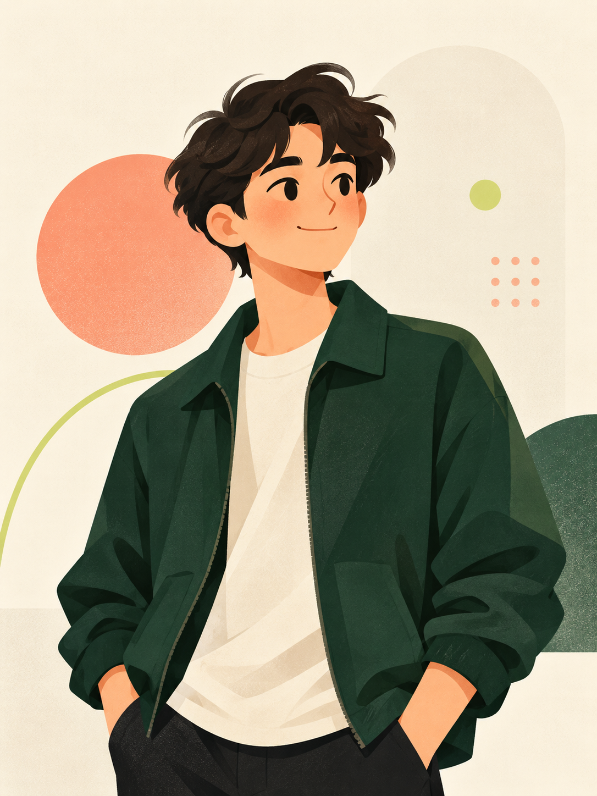

Available for opportunities · 2027 Graduate
你好，我是
刘金豪。
计算机科学与技术本科生，专注于把需求拆解成可运行、可验证的应用。关注 Android、微信小程序、软件测试与 IT 应用支持。

Computer ScienceDMU · 2027
01AndroidKotlin · XML
02Mini ProgramCross-platform
ANDROID ✦ KOTLIN ✦ WECHAT MINI PROGRAM ✦ SOFTWARE TESTING ✦ LINUX ✦ DATABASE ✦
01
ABOUT
我喜欢从真实需求出发，规划功能、实现页面、测试验证，再把发现的问题逐项修好。
就读于交通运输部直属 211、双一流高校大连海事大学。系统学习了计算机网络、操作系统、数据库原理、数据结构、计算机组成原理、Linux 系统与软件工程。
项目实践覆盖个人应用与团队协作。我能借助资料检索与 AI 工具推进开发，同时重视独立判断、测试过程和结果验证。
02
SELECTED WORK
做过的项目，
解决过的问题。
从个人需求驱动的产品，到多人协作的 Android 应用。
01
《留记》轻量记事应用
支持记事、分类与内容留存。完成 Android 版本后，继续迭代微信小程序版本，在不同平台间调整页面结构与交互逻辑。
- 从真实使用需求出发完成规划与页面设计
- 结合 Claude AI 辅助实现，并通过测试持续修正
- 积累跨平台开发、适配与问题验证经验
9:41
今天
留下一点
值得记住的事。
学习完成数据库课程复习18:30
生活晚间篮球训练20:00
02
安卓在线音乐播放平台
团队协作开发在线音乐平台，实现搜歌、歌单管理、音频播放和账号登录。我负责搜索、歌单、个人中心等页面及接口联调。
- 使用 Kotlin、XML 完成页面开发与适配
- 参与数据获取、解析、状态管理和页面展示
- 排查接口异常、页面状态不同步等问题
PLAY♪
Now playing
Night Drive
Focus playlist↶▶↷
03
CAPABILITIES
技能不是清单，
是解决问题的工具。
应用开发
Android · Kotlin · XML · 微信小程序 · 页面适配
↗接口与数据
Retrofit · OkHttp · 数据库基础 · JSON 数据解析
↗测试与排查
功能测试 · Bug 排查 · 状态异常定位 · 修复验证
↗计算机基础
C 语言 · 操作系统 · 计算机网络 · Linux 基本操作
↗协作与效率
团队协作 · Word / Excel / PPT · Claude AI 辅助开发
↗04
EDUCATION & HONOR
大连海事大学
计算机科学与技术 · 本科
交通运输部直属 211、双一流高校优秀学生三等奖
大连海事大学
音乐篮球户外阅读